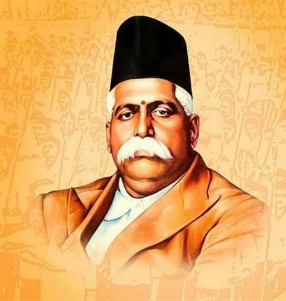
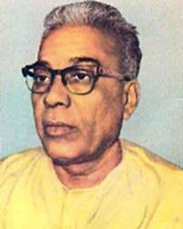
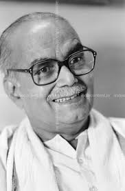
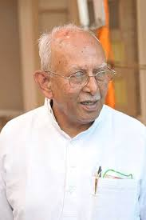
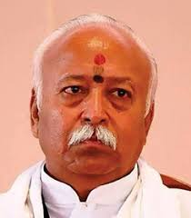

आद्य सरसंघचालक - डॉक्टर हेडगेवार

द्वितीय सरसंघचालक - श्री गुरुजी

तृतीय सरसंघचालक - श्री बालासाहब देवरस

चतुर्थ सरसंघचालक - प्रो. राजेन्द्र सिंह

पंचम सरसंघचालक - श्री कुप्.सी. सुदर्शन

षष्ठ सरसंघचालक - श्री मोहनराव भागवत